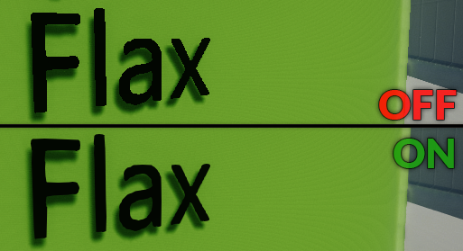

Anti-Aliasing

Anti-Aliasing effect is one of the most common way to reduce pixels aliasing and smooth jagged geometry edges. Flax offers various AA implementation that are suitable for various types of games. The active antialiasing mode can be specified in PostFx Volume per-level, per-camera or per game.
Fast Approximate Anti-Aliasing
Fast-Approximate Anti-Aliasing (FXAA) is a cheap but solid single-pass post effect that has a low-performance impact and solid quality for most games. It is the most common choice for various games.
For more information, see: FXAA Whitepaper.
Temporal Anti-Aliasing
Temporal Anti-Aliasing (TAA) is advanced effect where frames are accumulated over time in a dedicated history buffer to be used to smooth jiterring edges. It applies sub-pixel jitter to projection matrix and requires motion vectors.
| Property | Description |
|---|---|
| Jitter Spread | The diameter (in texels) inside which jitter samples are spread. Smaller values result in crisper but more aliased output, whilst larger values result in more stable but blurrier output. |
| Sharpness | Controls the amount of sharpening applied to the color buffer. TAA can induce a slight loss of details in high frequency regions. Sharpening alleviates this issue. High values may introduce dark-border artifacts. |
| Stationary Blending | The blend coefficient for stationary fragments. Controls the percentage of history sample blended into final color for fragments with minimal active motion. |
| Motion Blending | The blending coefficient for moving fragments. Controls the percentage of history sample blended into the final color for fragments with significant active motion. |
Subpixel Morphological Anti-Aliasing
Subpixel Morphological Anti-Aliasing (SMAA) is a high quality anti-aliasing effect. Depending on the art-style of your production it can work as well as TAA while avoiding some of the shortcomings of this technique. This effect is slower than FXAA.
For more information, see: SMAA Publication.